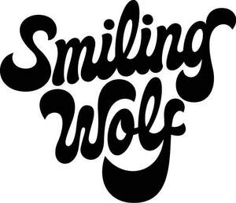

Trade Mark Journal No.2026/006 6 February 2026
UK00004326229 19 January 2026 (35,42)

- Class 35
- Design of advertising logos; Design of advertising materials; Design of advertising brochures; Design of advertising flyers; Advertising services to create corporate and brand identity; Advertising and marketing; Advertising and marketing consultancy; Brand creation services (advertising and promotion); Brand positioning; Marketing; Advertising services to create brand identity for others; Brand strategy services; Brand positioning services; Advertising copywriting; Advertising, marketing and promotional services; Advertising, promotional and marketing services; Marketing, advertising, and promotional services; Promotional marketing; Advertising and marketing services; Copywriting for advertising and promotional purposes; Advertising, marketing and promotion services; Marketing, advertising and promotion services; Business marketing consultancy; Marketing consultancy; Consultancy services relating to advertising, publicity and marketing; Promotion [advertising] of business; Developing promotional campaigns for business; Brand creation services; Marketing consulting; Business marketing services; Digital marketing; Graphic advertising services; Consultancy relating to the organisation of promotional campaigns for business; Consultancy regarding advertising communications strategy; Consultancy relating to business advertising; Marketing services; Business marketing consulting services; Copywriting; Corporate identity services; Advertising, marketing and promotional consultancy, advisory and assistance services; Advertising; Advertising and publicity; Publicity and advertising; Consultancy relating to marketing; Brand evaluation services; Advertising and publicity services; Advertising and promotional services; Promotional and advertising services; Promotional advertising services; Development of marketing concepts; Product merchandising; Development of advertising concepts; Brand testing; Developing promotional campaigns for businesses; Advertising and promotion services; Banner advertising; Development of promotional campaigns; Preparation of advertising campaigns; Providing business information via a web site; Providing business information via a website; Product marketing; Marketing agency services; Investigations of marketing strategy; Business marketing consultation services; Creative marketing plan development services; Consultancy regarding advertising communication strategies; Marketing management advice; Development of marketing strategies and concepts; Planning of marketing strategies; Professional consultancy relating to marketing; Consultancy relating to advertising and promotion services; Corporate management consultancy; Business consultation relating to advertising; Digital advertising services; Business advice relating to marketing; Marketing (Business advice relating to -); Consultancy relating to advertising; Business strategy services; Advertising services for the promotion of beverages; Marketing information; Reproduction of drawings; Preparation and presentation of audio visual displays for advertising purposes; Publication of printed matter for advertising purposes; Publication of printed matter for advertising purposes in electronic form; Electronic publication of printed matter for advertising purposes; Audio-visual displays for advertising purposes (Preparation or presentation of -); Compilation of advertisements for use as web pages on the Internet; Compilation of advertisements for use on internet web pages; Compilation of advertisements for use as web pages; Providing marketing information via websites; Promoting the artwork of others by means of providing online portfolios via a website; Promoting the designs of others by means of providing online portfolios via a website; Composing advertisements for use as web pages; Promotion, advertising and marketing of on-line websites.
- Class 42
- Graphic design; Graphic illustration design; Graphic art design; Graphic arts design; Design (Graphic arts -); Graphic illustration design services; Graphic design services; Industrial and graphic art design; Graphic designing; Graphic design of promotional materials; Design and graphic arts design for the creation of web sites; Computer aided graphic design; Visual design; Design of artwork; Graphic arts designing; Designing (Graphic arts -); Services of a graphic designer; Design and graphic arts design for the creation of web pages on the Internet; Illustration services (design); Interior design; Brochure design; Design of stationery; Packaging design; Design of packaging; Computer design; Technical design; Website design; Logo design services; Computer graphics design services; Graphic art services; Illustrating services (design); Commercial art design; Design of interior decoration; Art work design; Preparation of reports relating to graphic arts design; Commercial interior design; Pattern design; Design services for art-work; Design consultancy; Design of websites; Computer website design; Design of logos for t-shirts; Website design and development; Design of sculptures; Animation design for others; Design of prototypes; Design of interior decor; Decor (Design of interior -); Interior decor design; Interior decorating design; Design of printed material; Urban design; Website design consultancy; Shop interior design; Design of signs; Design of graphics and of livery for corporate identity; Design services relating to window graphics; Graphic design for the compilation of web pages on the internet; Design services (Packaging -); Design services for packaging; Packaging design services; Graphic illustration services for others; Design of logos for corporate identity; Brand design services; Design of brand names; Consultancy relating to the design of packaging; Designing websites for advertising purposes; Product design services; Business card design services; Business card design; Consultancy relating to the creation and design of websites for e-commerce; Homepage and webpage design; Website hosting services; Website design services; Web site design; Web site design services; Internet web site design services; Web site design consultancy; Web page design services; Website development services; Webpage design services; Web site design and creation services; Website development for others; Web portal design; Design of web sites; Design of home pages and web sites; Design of homepages and websites; Design of web pages; Computer site design; Compilation of web pages for the Internet; Creation of internet web sites; Design and updating of home pages and web pages; Design and creation of homepages and web pages; Design and development of homepages and websites; Programming of web pages; Programming of customized web pages; Consultancy relating to the design of home pages and Internet sites; Design and construction of homepages and websites; Design of homepages and Internet pages; Consultancy with regard to webpage design; Design, creation and programming of web pages; Creating websites; Design and creation of web sites for others; Installing web pages on the internet for others; Design and creation of homepages and Internet pages; Design and creating web sites for others; Design of Internet pages; Creation and maintenance of web sites; Interior design services; Design and development of multimedia products; Computer design research; Design of post card cartoon characters; Preparation of design parameters for visual images; Computer graphic design for video projection mapping; Design services relating to artwork; Programming of software for website development; Creating electronically stored web pages for online services and the internet; Consultancy relating to the design of homepages and Internet pages.
Smiling Wolf Limited